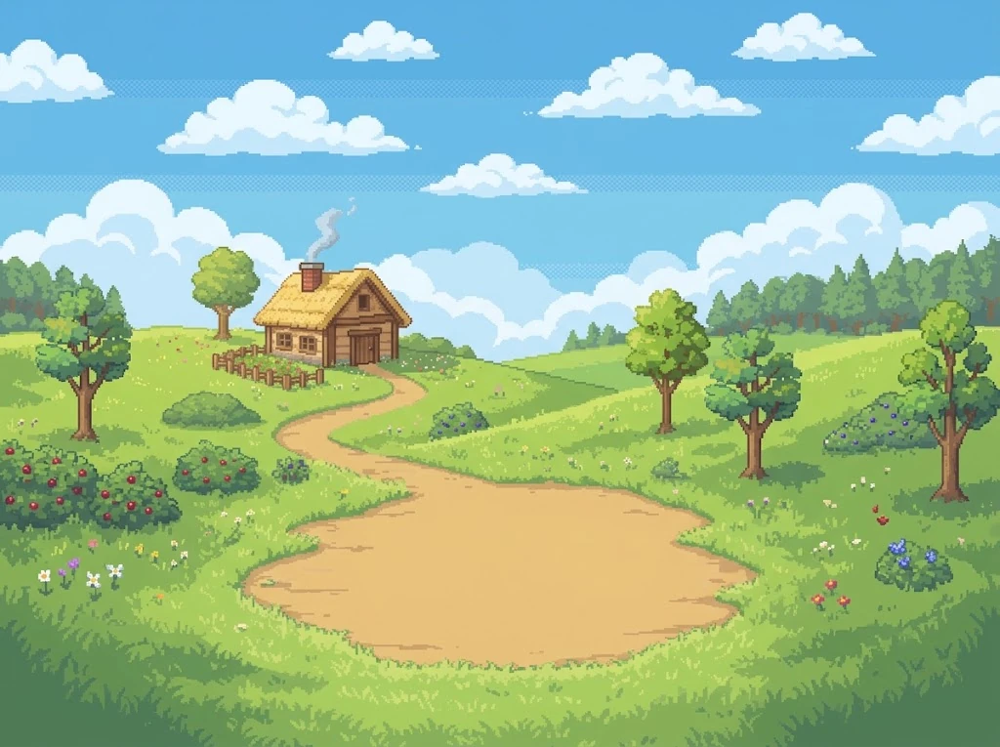
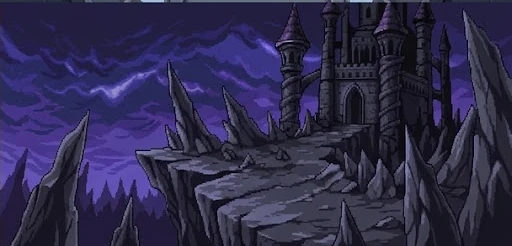

阳光村落
初始栖息地 · 0 碎片自带
烧 token · 养电子宠物
它住在 magpie 侧边栏里，自动汇总所有已记账请求的真实 token 喂给当前出战搭档。不注入任何 Agent 上下文，不读取对话内容，也不消耗额外 token。
它正在村落里巡视领地，精神饱满。
这里仅公开 4 处场景预览，点击卡片可切换上方橱窗背景；更多场景留待在主插件中探索解锁。


支持点击跳跃、按住抚摸冒爱心、拖拽拎起与双击转圈。饱食、心情、精力、清洁与亲密随时间自然呼吸，三档探险与每日目标稳定产出数据碎片。
当 token 喂满当前阶段阈值，搭档将开启进化对决。克制对手即可突破至下一阶段；即使失利也只需再战一场必定成功。
只轮询 magpie 网关自身的记账接口，绝不触碰任何 Agent 的请求体或提示词。SQLite 存档独立保存在用户数据目录，升级插件不丢进度。